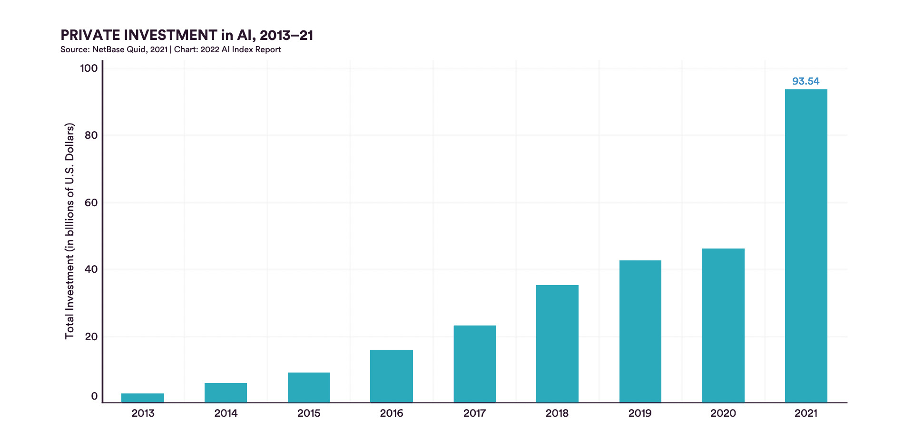

IA et enjeux de l’automatisation, partie 2¶
Cette seconde partie du dossier permet d’approfondir quelques questions relatives à l’IA et à l’automatisation. Le travail des êtres humains est-il en train de disparaître face à l’automatisation de certaines tâches? Quels sont les domaines dans lesquels l’IA est particulièrement efficace? À quoi faut-il faire attention? Comment ses usages et applications peuvent-ils être régulés?
Objectifs¶
Comprendre comment l’IA et l’automatisation impacte et transforme le marché du travail
Explorer les forces et les risques relatifs à l’IA
Étudier le thème de la conduite autonome à travers le prisme de l’IA
Enjeux¶
Grâce aux récentes percées de l’apprentissage automatique, l’IA franchit aujourd’hui une nouvelle étape, comme en témoigne l’augmentation considérable (AI Report 2022, HAI Stanford) des investissements depuis 2013. Des domaines aussi divers que la santé, l’éducation, mais aussi le commerce, l’industrie et la recherche intègrent ces technologies et se transforment. Ce retour en force de l’IA implique un questionnement accru sur ses effets. Il est notamment question de délégation du travail et des conséquences sur l’emploi, de transparence, de protection de la vie privée et de cadre juridique.
🎛 Délégation¶
L’automatisation consiste à déléguer de manière systématique une tâche ou une prise de décision à une machine. Il existe toujours plusieurs manières d’envisager la délégation d’une tâche, que ce soit en termes de faisabilité ou de désirabilité. Dans les deux cas, ses effets sur l’être humain et la société face aux nouvelles technologies doivent être considérés.
Les questions de délégation du travail ne sont pas propres à l’IA. Elles se posaient déjà à l’aube de la révolution industrielle. Au début du XIXe siècle, le mouvement des luddites en Grande-Bretagne organisait la destruction de nouvelles machines, accusées d’augmenter le chômage. Mais les luttes sociales face aux nouvelles technologies furent rapidement vaincues par l’industrialisation et la mécanisation du travail, qui suivirent leur cours jusqu’à nos jours.
Aujourd’hui, les technologies de l’IA réactualisent et prolongent cette dynamique. En plus des possibilités de déléguer des fonctions mécaniques aux machines, il est désormais possible de déléguer certaines fonctions cognitives.

Investissements mondiaux privés dans le domaine de l’IA entre 2013 et 2021, en milliards de dollars.
🦾 Le travail au défi de l’IA¶
En 2013, une étude menée par des chercheurs de l’Université d’Oxford conclut que 47% des emplois sont menacés par les avancées dans le domaine de l’apprentissage automatique. Ces résultats alarmants sont rapidement remis en cause par des erreurs méthodologiques. De plus, les nouveaux emplois nécessaire au développement et au suivi de l’IA ne sont pas mentionnés. Cette étude nous amène néanmoins à réfléchir à l’impact de l’automatisation et de l’IA sur les emplois, dans un contexte où la technologie transforme effectivement le marché du travail.
Comme expliqué par l’économiste David H. Autor (MIT) en 2015, le discours du remplacement du travail de l’être humain par la machine ainsi que les craintes qui en découlent ne sont pas récents. Les données historiques montrent néanmoins que le phénomène ne se vérifie pas empiriquement. Si l’automatisation de nombreux secteurs a bien eu lieu au cours du XXe siècle et continue aujourd’hui encore, l’évolution des taux de chômage de différents pays ne reflète pas une baisse drastique de l’emploi. On observe plutôt une transformation du marché du travail, avec un renversement de la distribution de l’emploi du secteur primaire vers le secteur tertiaire. Une analyse plus fine des impacts de l’IA sur le travail et l’économie s’impose donc.
Dans son livre En attendant les robots (Seuil, 2019), le sociologue Antonio Casilli déconstruit la croyance du remplacement du travail de l’être humain par les machines et les IA. Il constate, lui aussi, une transformation du marché du travail plutôt qu’une disparition des emplois. Avec l’arrivée des nouvelles technologies de l’information et de la communication, une tendance à la polarisation se dessine : d’un côté, une forte demande pour les métiers hautement spécialisés est constatée; de l’autre, un besoin croissant de main d’œuvre peu qualifiée pour effectuer des tâches répétitives et standardisées, essentielles au bon fonctionnement des systèmes automatisés. Cet seconde catégorie d’emplois, peu qualifiés mais indispensables à l’entraînement des IA, constitue ce que l’on appelle le digital labour.
La question n’est donc pas de savoir si l’IA remplacera un jour les travailleurs, mais plutôt de réfléchir à la pertinence d’intégrer les technologies algorithmiques dans différentes situations et dans quelles proportions. Elle nous amène également à envisager des solutions permettant de gérer les transformations socio-économiques qui résultent de l’automatisation de certaines tâches.
Afin que les avantages de l’IA profitent au plus grand nombre, les systèmes économiques et politiques doivent s’adapter aux changements induits par l’automatisation. La redistribution des tâches, et donc de la productivité engendrée par l’automatisation modifie la redistribution du travail ainsi que du gain de productivité et du capital. Les entreprises vont-elles continuer à profiter de l’automatisation du travail? Dans quelles proportions? Faut-il envisager de taxer les gains engendrés par les machines et les systèmes d’IA afin d’assurer les modèles sociaux en place (Assurance chômage, AVS, etc.)? Ces questions centrales peinent à s’imposer dans le débat public, mais elles devront être considérées tôt ou tard.
🧬 Domaines de prédilection¶
L’efficacité d’un modèle prédictif d’IA est liée à la nature des données qu’il traite. Lorsqu’il s’agit d’informations stables et objectives, comme c’est le cas pour les pixels d’une image représentant une forme, les techniques d’apprentissage automatique fonctionnent relativement bien et offre des résultats satisfaisants. Les possibilités d’automatisation de l’IA offrent alors des avantages multiples, par exemple pour la recherche scientifique et médicale.
Les algorithmes et l’IA ont déjà fait leurs preuves pour détecter certains cancers plus rapidement que les spécialistes. En 2020, la société DeepMind (Alphabet) a révolutionné la bio-informatique en proposant un modèle de prédiction de la structure des protéines, permettant d’accélérer fortement la recherche pour l’élaboration de nouveaux vaccins.
Dans les deux cas, l’apprentissage automatique est utilisé pour effectuer une tâche précise et compartimentée, qui s’inscrit dans un contexte plus large. Le travail des chercheurs et des scientifiques demeure toutefois indispensable pour comprendre, communiquer les résultats et coordonner l’ensemble d’un projet.
⚖ Réguler l’IA¶
À la suite des diverses controverses engendrées par des IA, de grandes entreprises comme Google, Microsoft ou IBM ont mis en place des comités d’éthique. Plusieurs projets ont été suspendus en raison du risque de perpétuer des pratiques discriminatoires. Il s’agit dans ce cas d’une forme de gouvernance interne, non-contraignante, appliquée au bon vouloir des entreprises.
Du côté de la société civile, des mouvements citoyens se sont constitués, à l’image de la campagne contre la reconnaissance faciale lancée par Amnesty International en 2020 et de l’ONG AlgorithmWatch. Cette organisation se focalise particulièrement sur les risques liés aux prises de décisions basées sur des algorithmes. En plus des articles permettant d’expliquer les enjeux relatifs aux prises de décisions automatisées, elle propose quelques règles de bonnes pratiques pour collecter, analyser et interpréter les données, tout en privilégiant les intérêts humains et sociaux.
Les revendications de ces organisations quant à la protection de la vie privée s’inscrivent dans un mouvement de défiance politique, opposé à l’adoption de nouveaux modes de surveillance par les gouvernements. Si les démocraties tentent de faire preuve de bonne volonté et régulent les applications de l’IA dans l’intérêt de leurs citoyens, les régimes autoritaires n’hésitent pas à utiliser les données qu’elles possèdent pour contrôler les masses. Dans un contexte politique mondial incertain, il est nécessaire de réfléchir aux risques des dispositifs de surveillance, en cas de changement de régime politique par exemple.
La volonté de réguler l’IA varient selon les régions du monde et les systèmes politiques en place. Aux États-Unis, actuel leader mondial dans le domaine, seuls quatre États ont adopté une forme de régulation relative à l’IA en 2021. La tradition libérale du pays se traduit par une faible intervention de l’État dans un domaine principalement dominé par des entreprises privées.
La situation est différente en Chine, où le Parti communiste à la tête du gouvernement a clairement indiqué ses ambitions de dépasser les états-Unis et de s’imposer dans le domaine de l’IA d’ici 2030. Pour ce faire, elle adopte une attitude de laisser-faire et régule en fonction des situations et de ses intérêts. Un organe consacré à l’administration numérique est chargé de ces questions. Des mesures spécifiques visant à réguler l’application de l’IA dans divers services en ligne ont été adoptées en mars 2022. Les acteurs concernés par ces régulations sont principalement des entreprises chinoises.
En Europe, la Commission européenne a proposé en avril 2021 « un ensemble d’actions visant à stimuler l’excellence dans le domaine de l’IA, ainsi que des règles destinées à garantir la fiabilité de cette technologie »1. Afin d’estimer les risques que pourrait représenter l’IA pour les citoyens et citoyennes, la CE propose un classement qui détermine le niveau de régulation nécessaire pour chaque domaine. La catégorie « haut risque » comprend, par exemple, les logiciels de recrutement ou les prises de décision automatisées dans l’attribution d’un crédit, situations où les biais sont souvent présents. Les ambitions de régulation venant de la CE demeurent ambiguës puisqu’elle ne dispose pas d’acteur majeur dans le domaine de l’IA.
Les enjeux de la conduite autonome
Le thème de la conduite autonome permet d’aborder différents enjeux sociaux liés à l’IA. L’automatisation du traitement des informations contextuelles et des prises de décision constitue un nouveau paradigme de la conduite, qui touche directement à des problématiques techniques, mais aussi aux questions de délégation de certaines tâches, de responsabilité et de régulation.
Comme les êtres humains, les véhicules autonomes doivent apprendre à conduire afin d’être capables d’effectuer des trajets de manière sûre. Pour ce faire, un important travail de programmation et d’entraînement est nécessaire. Les données contextuelles permettant aux véhicules de s’orienter sont collectées grâce à des capteurs (radars, lidars, caméras) puis traitées par un ordinateur embarqué. Ces dispositifs doivent notamment permettre d’éviter les obstacles, d’adapter la vitesse et de respecter la signalisation.
Des robots-livreurs autonomes ont déjà fait leurs preuves pour le transport de nourriture ou de médicaments, en Grande-Bretagne et en Finlande. Il s’agit dans ce cas de petits véhicules qui se déplacent à faible vitesse (6km/h), sur de courts trajets et en empruntant les voies piétonnes. L’utilisation de ces véhicules demeure marginale, mais pourraient représenter une sérieuse concurrence pour les métiers de coursier et de chauffeur.
L’autonomie des voitures, des bus ou encore des camions posent des défis plus exigeants. Il s’agit de véhicules plus imposants, visant à être intégrés au trafic et pouvant transporter des personnes. Aussi, il est techniquement plus complexe de garantir une conduite autonome sûre dans un environnement où les paramètres à prendre en compte sont multiples et parfois subjectifs.
La mise en circulation de tels véhicules requiert un cadre légal adapté. Il devra déterminer le type de véhicules autorisés sur les routes ainsi que les manières de réguler précisément ces nouveaux acteurs. La question de la responsabilité en cas d’accident demeure donc ouverte.
De manière générale, la conduite autonome complète n’est qu’à ses débuts. Les tests dans le trafic ont montré des résultats mitigés et les quelques accidents impliquant des voitures autonomes soulignent la difficulté de résoudre les problèmes de responsabilité.
On préfère actuellement parler de conduite assistée, où la technologie rend les trajets plus confortables, mais n’est pas encore en mesure de remplacer l’être humain dans toutes les situations.
Ressources¶
Le livre du physicien et sociologue Pablo Jensen, Pourquoi la société ne se laisse pas mettre en équation (2018)
L’article (en anglais) sur la question de la résolution des biais
Le reportage sur les biais sexistes dans les offres d’emploi en ligne, RTS
Le podcast sur la question de l’intelligence en informatique. Le code a changée, France Inter
L’exposition « Intelligence artificielle, nos reflets dans la machine » au Musée de la Main de Lausanne, jusqu’au 23 avril 2023
Glossaire¶
Biais
Gouvernementalité algorithmique
Luddites / luddisme
Pistes pédagogiques¶
Pour des idées d’activités sur cette thématique, voir le dossier.
- 1
https://ec.europa.eu/info/strategy/priorities-2019-2024/europe-fit-digital-age/excellence-trust-artificial-intelligence_fr#stimuler-lexcellence-dans-le-domaine-de-lia, consulté le 31 mars 2022.